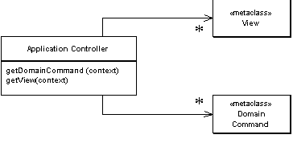
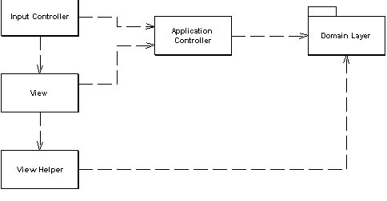
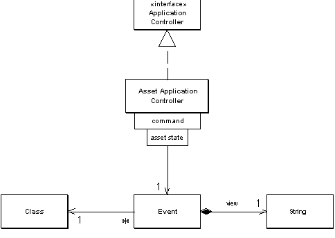

| Home | Articles | Talks | Links | Contact Me | ISA | ThoughtWorks |
A centralized point for handling screen navigation and flow of an application

Some applications contain a significant amount of logic about what kind of screens to use at different points. This may involve invoking certain screens at certain points in an application, such as the wizard style of interaction where the user is led through a series of screens that need to be done in a certain order. Other cases we may see screens that are only brought in under certain conditions, or choices between different screens that depend on earlier input.
To some degree the various Model View Controller input controllers can make some of these decisions, but as the application gets more complex this can lead to duplicated code, as several controller for different screens need to know what to do in a certain situation.
You can remove this duplication by placing all the flow logic into an Application Controller. Input controllers then ask the Application Controller for the appropriate commands for execution against a model and the correct view to use depending on the context within the application.
An Application Controller has two main responsibilities: deciding which domain logic to run, and deciding which view to the display the response with. To this the Application Controller typically holds two structured collections of class references, one for domain commands to execute against in the domain layer and one of views
Figure 1: An application controller has two collections of references to classes, one for domain logic and one for view.
For both the domain commands and the view, the application controller needs some way of storing something that it can invoke. A command is a good choice, since it allows us to get hold of and run a block of code easily. Languages that can manipulate functions can hold a reference to a function. Another option is to hold a string that can be used to invoke a method by reflection.
The domain commands can be command objects that are part of the Application Controller layer, or they can be references to a Transaction Script or domain object method in the domain layer.
If you are using server pages as your views, then you can use the name of a server page. If you are using a class then a command or a string for a reflective call makes sense. You might also use an XSLT transform, in which case the Application Controller can hold a string to reference the transform.
One decision you'll need to make is how much to separate the Application Controller from the rest of the presentation. At the first level this manifests itself in whether the Application Controller has dependencies into the UI machinery. This might take the form of the Application Controller directly accessing the http session data, forwarding to a server page, or invoking methods on a rich client class.
Although I've seen direct Application Controllers, my preference is for the Application Controller to have no links to the UI machinery. For a start this makes it possible to test the Application Controller independently of the UI, which is a major benefit. It's also important to do this if you're going to use the same Application Controller with multiple presentations. As a result many people like to think of the Application Controller as an intermediate layer between the presentation and the domain.
Figure 2: My preferred dependencies when using an application controller
An application can have multiple Application Controllers to handle different parts of an application. This allows you to split complex logic up into several classes. In this case I usually see the work divided up into broad areas of the user interface and build separate Application Controllers for each area. On a simpler application I might only need a single Application Controller.
If you have multiple presentations - such as a web front end, a rich client, and a PDA - you may be able to use the same Application Controller for each presentation. Don't be too eager to do this. Often different UIs really need a different screen flow to give a really usable user interface. However reusing a single Application Controller may reduce the development effort, and the lower effort may be worth the cost of a more awkward user interface.
A common way of thinking about a UI is a state machine, where certain events trigger different responses depending on the state of certain key objects in the application. In this case the Application Controller is particularly amenable to using metadata to represent the state machine's control flow. The metadata can either be set up by programming language calls (the simplest way) or you can store the metadata in a separate configuration file.
You may find domain logic that's particular to one request placed in an Application Controller. As you might suspect I'm come down pretty hard against that notion. However the boundary between domain and application logic does get very murky. Say I'm handling insurance applications and I need to show a separate screen of questions only if the application is a smoker. Is this application logic or domain logic? If I have only a few such cases I'd probably put that kind of logic in the Application Controller, but if it occurs in lots of places I'd look to design the Domain Model in such a way to drive this.
If the flow and navigation of your application is pretty simple, anyone can visit any screen in pretty much any order, then there's little value in a Application Controller. The strength of an Application Controller comes from definite rules about the order in which pages should be visited and different views depending on the state of objects.
A good signal to use an Application Controller is if you find yourself having to make similar changes in lots of different places when your application's flow changes.
Most of the ideas that underlie the writing of this pattern came from reading [Knight and Dai]. Although these ideas aren't exactly new, I found the explanation in [Knight and Dai] remarkably clear and compelling.
State model's are a common way of thinking about user interfaces. They are particularly appropriate when you need to react differently to events depending on the state of some object. In this example I have a simple state model for a couple of commands on an asset. Our leasing experts would faint at the virulent oversimplification of this model, but it'll do to show an example of state based Application Controller.

Figure 3: A simple state diagram for an asset
As far as the code is concerned our rules are this:
The input controller is a Front Controller. It services the request like this.
class FrontServlet...
public void service(HttpServletRequest request, HttpServletResponse response)
throws IOException, ServletException
{
ApplicationController appController = getApplicationController(request);
String commandString = (String) request.getParameter("command");
DomainCommand comm =
appController.getDomainCommand(commandString, getParameterMap(request));
comm.run(getParameterMap(request));
String viewPage =
"/" + appController.getView(commandString, getParameterMap(request)) + ".jsp";
forward(viewPage, request, response);
}
The flow of the service method is pretty straightforward, we find the right application controller for a given request, we then ask the application controller for the domain command, execute the domain command, ask the application controller for a view, and finally forward to the view.
In this scheme I'm assuming a number of Application Controllers, all of which implement the same interface.
interface ApplicationController... DomainCommand getDomainCommand (String commandString, Map params); String getView (String commandString, Map params);
For our commands, the appropriate Application Controller is an asset application controller. The asset application controller uses an response class to hold the domain commands and view references. For the domain command I use a reference to a class, for the view I use a string which the front controller will turn into a URL for a JSP.
class Response...
private Class domainCommand;
private String viewUrl;
public Response(Class domainCommand, String viewUrl) {
this.domainCommand = domainCommand;
this.viewUrl = viewUrl;
}
public DomainCommand getDomainCommand() {
try {
return (DomainCommand) domainCommand.newInstance();
} catch (Exception e) {throw new ApplicationException (e);
}
}
public String getViewUrl() {
return viewUrl;
}
The application controller holds onto the responses using a map of maps indexed by the command string and an asset status.
class AssetApplicationController...
private Response getResponse(String commandString, AssetStatus state) {
return (Response) getResponseMap(commandString).get(state);
}
private Map getResponseMap (String key) {
return (Map) events.get(key);
}
private Map events = new HashMap();
Figure 4: How the asset application controller stores its references to domain commands and views
When asked for a domain command, the controller looks at the request to figure out the asset id, goes to the domain to find out the status of that asset, looks up the appropriate domain command class, instantiates it and returns the new object.
class AssetApplicationController...
public DomainCommand getDomainCommand (String commandString, Map params) {
Response reponse = getResponse(commandString, getAssetStatus(params));
return reponse.getDomainCommand();
}
private AssetStatus getAssetStatus(Map params) {
String id = getParam("assetID", params);
Asset asset = Asset.find(id);
return asset.getStatus();
}
private String getParam(String key, Map params) {
return ((String[]) params.get(key))[0];
}
All the domain commands follow a simple interface which allows the front controller to run them.
interface DomainCommand... abstract public void run(Map params);
Once the domain command has done what it needs to do then the Application Controller comes into play again as it's asked for the view.
class AssetApplicationController...
public String getView (String commandString, Map params) {
return getResponse(commandString, getAssetStatus(params)).getViewUrl();
}
In this case the Application Controller doesn't return the full URL to the JSP. It returns a string that the front controller turns into an URL. I do this to avoid duplicating the URL paths in the responses. This also will make it easy to add further indirection later should I need it.
The Application Controller can be loaded for use with code.
class AssetApplicationController...
public void addResponse(String event, Object state, Class domainCommand, String view) {
Response newResponse = new Response (domainCommand, view);
if ( ! events.containsKey(event))
events.put(event, new HashMap());
getResponseMap(event).put(state, newResponse);
}
private static void loadApplicationController(AssetApplicationController appController) {
appController = AssetApplicationController.getDefault();
appController.addResponse( "return", AssetStatus.ON_LEASE,
GatherReturnDetailsCommand.class, "return");
appController.addResponse( "return", AssetStatus.IN_INVENTORY,
NullAssetCommand.class, "illegalAction");
appController.addResponse( "damage", AssetStatus.ON_LEASE,
InventoryDamageCommand.class, "leaseDamage");
appController.addResponse( "damage", AssetStatus.IN_INVENTORY,
LeaseDamageCommand.class, "inventoryDamage");
}
Doing this from a file instead isn't rocket science, but even so I'll leave it to you.
 |  |